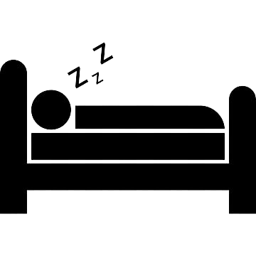

Aktivitas Siang Jam 12.00-17.00
Aktivitas siang hari diawali dengan sholat dhuhur, setelah sholat dhuhur saya menlanjutkan aktivitas seperti biasanya yaitu mengikuti perkuliahan dimulai dari jam 13.00-15.30. setelah aktivitas perkuliahan selesai saya pergi ke lapangan untuk bermain sepak bola pada sore hari.

Aktivitas Malam Jam 18.00-24.00
Setelah aktivitas pada sore hari saya melanjutkan aktivitas dengan mandi sore kemudian menunaikan ibadah sholat maghrib. setelah sholat maghrib saya pergi mengaji di mushola terdekat kemudian dilanjutkan dengan sholat isya. setelah sholat isya saya mengerjakan tugas yang telah diberikan oleh dosen sebelumnya sampai saya ngantuk dan tertidur.